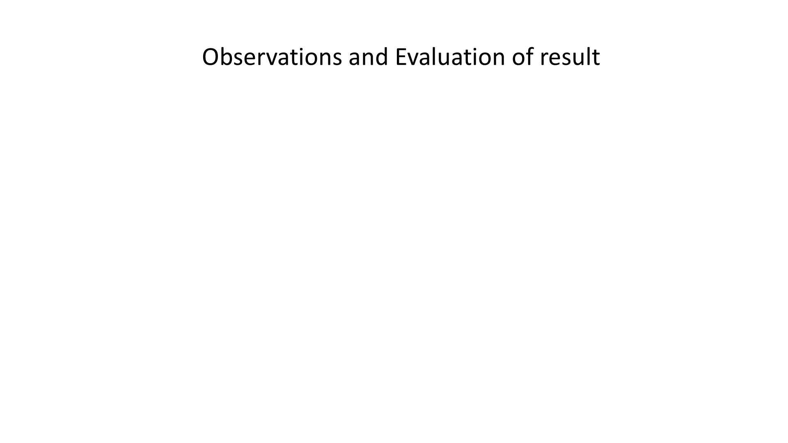
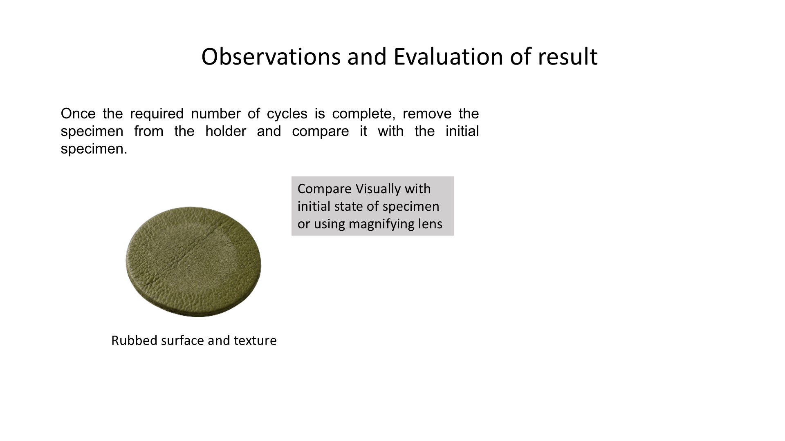
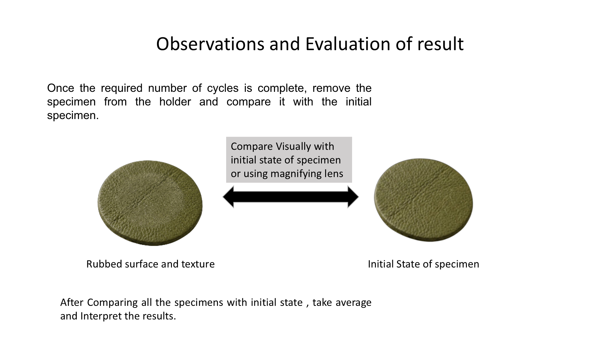

Step 16 Remove the specimen after the required number of cycles. Compare visually with the initial specimen state, or use a magnifying lens. Take the average of all three specimens and interpret the results. Click the slide to reveal comparison images.


